Основы выбора электронного ридера

Автор : Сергей Асмаков
Настройки форматирования текста
Настройки форматирования текстаВ отличие от бумажных книг, ридеры позволяют изменять настройки форматирования, обеспечивая таким образом максимально комфортные условия для чтения с учетом предпочтений пользователя. Однако у разных моделей набор доступных настроек может заметно различаться.
Практически во всех ридерах предусмотрена возможность выбора гарнитуры и размера шрифта. Обычно предоставляются на выбор дветри предустановленные гарнитуры разных типов. Кроме того, программное обеспечение некоторых ридеров позволяет использовать стандартные шрифты формата TrueType (TTF). В этом случае расширить набор доступных вариантов можно путем загрузки файлов TTF в соответствующий раздел встроенной памяти. В зависимости от особенностей программного обеспечения ридера выбор гарнитуры производится либо в разделе общих настроек, либо в контекстном меню режима чтения. У некоторых моделей предусмотрена возможность быстрого переключения гарнитуры в режиме чтения при помощи соответствующего органа управления.
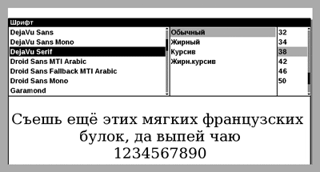
Меню выбора используемых по умолчанию гарнитуры
и размера шрифта ридера
PocketBook Pro 902
Практически все ридеры позволяют выбрать размер шрифта из нескольких вариантов — обычно от трех до пяти. Однако стоит обратить внимание на то, что набор доступных настроек для разных типов файлов может различаться. Для управления переключением размера шрифта может использоваться контекстное меню или специальная аппаратная кнопка. В ряде моделей, оснащенных сенсорными экранами, можно изменять размер шрифта в режиме чтения посредством соответствующих жестов.
Программное обеспечение некоторых ридеров позволяет настраивать и другие параметры — в частности межстрочный интервал, величину полей и т.д. Такие функции обеспечивают дополнительную гибкость по изменению вида виртуальной страницы, однако имеются далеко не во всех моделях.
Необходимо отметить, что спецификация некоторых форматов (в частности, PDF, DOC и RTF) предусматривает возможность сохранения информации о гарнитурах и размере используемых шрифтов. Соответственно программное обеспечение многих ридеров применяет эти данные при форматировании текста. По этой причине страницы одной и той же книги, сохраненной в файлах разных форматов (к примеру, в FB2 и DOC), могут отображаться на экране по-разному при одинаковых настройках ридера.
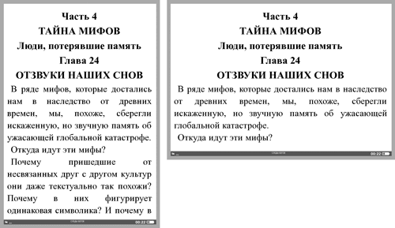
Большинство ридеров позволяют отображать страницу как в портретной,
так и в альбомной ориентации
Как уже было упомянуто в предыдущей части статьи, многие модели, поддерживающие работу с форматом PDF, позволяют отображать содержимое этих файлов как в виде исходных страниц (с возможностью масштабирования), так и в режиме переформатирования. В последнем случае отображается только содержимое текстовых блоков открытого документа, отформатированных под размер экрана.
В большинстве современных ридеров имеется возможность отображения страницы как в портретной (вертикальной), так и в альбомной (горизонтальной) ориентации. Последний вариант может оказаться весьма удобным в ряде случаев, например если ридер оснащен экраном небольшого размера, а функция расстановки переносов не предусмотрена. Для переключения ориентации страницы обычно используется соответствующий пункт контекстного меню или специальная кнопка. В моделях, оборудованных встроенным гиросенсором, предусмотрена возможность как ручного, так и автоматического переключения ориентации страницы при изменении положения корпуса устройства (обычно этот режим можно отключить в настройках).
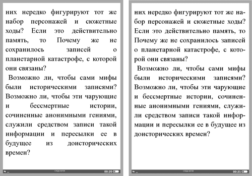
Наличие функции автоматической расстановки переносов
для русского языка позволяет значительно улучшить читаемость текста
И еще одна функция, на наличие которой следует обратить внимание, — расстановка переносов. При размере экрана 5-6 дюймов возможность переноса слов позволяет значительно улучшить читаемость текста, особенно при использовании крупного шрифта и форматирования с выключкой по краям. К сожалению, функция расстановки переносов для русского языка предусмотрена далеко не во всех моделях, официально поставляемых в нашу страну.
В заключение этого раздела — универсальный совет. Чем больше возможностей по настройке форматирования текста предусмотрено в программном обеспечении ридера, тем лучше. Нелишне также будет убедиться в том, что данные функции доступны при чтении всех форматов, которые вы планируете использовать. Кроме того, следует обратить внимание на диапазон настроек размера шрифта. Если при выборе максимального значения этого параметра текст на экране оказывается слишком мелким для комфортного чтения, то лучше отказаться от покупки и присмотреться к другим моделям.
Навигация в режиме чтенияПри чтении бумажной книги доступны простейшие навигационные действия: вы можете перелистывать страницы, а также воспользоваться оглавлением для поиска нужного произведения или фрагмента по номеру страницы. Электронные книги предоставляют более разнообразные возможности.
В зависимости от конструктивных особенностей ридера управление перелистыванием страниц может осуществляться посредством кнопок, клавиш либо многопозиционного указателя, а при наличии сенсорного экрана — и специальными жестами (например, скользящим движением в горизонтальном направлении). Нередко клавиши перелистывания, размещенные сбоку от экрана, продублированы с двух сторон: благодаря этому устройством одинаково удобно пользоваться как правшам, так и левшам. Во многих моделях предусмотрен альтернативный вариант управления — например перелистывать страницы в режиме чтения можно как соответствующими кнопками, так и при помощи многопозиционного указателя. Программное обеспечение некоторых ридеров позволяет настраивать функции аппаратных органов управления, в этом случае пользователь может сконфигурировать их наиболее удобным для себя образом.
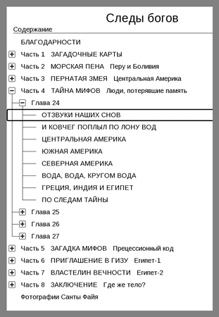
Поддержка электронного оглавления —
весьма удобная функция
В большинстве устройств предусмотрен режим ускоренного перелистывания (например, при длительном нажатии соответствующих клавиш можно «перепрыгнуть» сразу на 10 страниц вперед или назад), а также функция перехода к странице с определенным номером. Правда, необходимо учитывать, что в документах с плавающим форматированием (таких как TXT, RTF, FB2 и т.д.) количество страниц варьируется в зависимости от текущих настроек (в частности, гарнитуры и размера шрифта, ориентации страницы и т.д.). Соответственно при изменении этих параметров содержимое страницы с одним и тем же номером будет меняться.
Чтобы помечать определенные места в текс-те, предусмотрена функция создания закладок. В отличие от номера страницы, закладка привязывается к определенному фрагменту текста. Обычно список закладок доступен в контекстном меню в режиме чтения либо в соответствующем разделе главного меню. Максимальное количество закладок, которое можно сохранить в книге, зависит от особенностей программного обеспечения ридера: в некоторых моделях этот параметр лимитирован, у других же ограничений нет.
Для поиска нужного произведения или его структурной части в бумажной книге имеется оглавление. Есть такая возможность и во многих электронных книгах. Спецификации большинства форматов, созданных специально для распространения электронных книг (в частности, FB2, ePub и PDF), предусматривают возможность создания встроенного оглавления, которое по сути представляет собой список гиперссылок для перехода к основным структурным элементам (частям, главам, разделам и т.п.). Обычно в режиме чтения перейти к оглавлению можно при помощи контекстного меню либо соответствующей кнопки. К сожалению, работа со встроенным оглавлением электронных книг поддерживается далеко не во всех ридерах.
Функция контекстного поиска позволяет быстро
найти нужный фрагмент по ключевому слову или фразе
Во многих электроннокнижных форматах (в том числе в FB2 и ePub) предусмотрена возможность создания сносок. В отображаемом на экране тексте они выглядят точно так же, как и в обычных книгах, — в виде надстрочных индексов. Обычно для просмотра сноски необходимо активировать соответствующий пункт контекстного меню, а затем при помощи навигационных клавиш (или прикосновения к сенсорному экрану) переместить курсор на ее номер. Впрочем, бывают и другие варианты реализации данной функции — например в виде общего списка всех сносок открытой книги, доступного в контекстном меню.
По мере роста популярности ридеров расширяется и сфера их применения: сейчас эти устройства нередко используют не только для чтения художественной литературы, но и для работы с учебниками, справочниками и словарями. В этом случае весьма полезными могут оказаться дополнительные функции — контекстный поиск, запись цитат и т.д.
Функция контекстного поиска позволяет найти в открытой книге нужный фрагмент по ключевому слову или фразе. Обычно она реализована так же, как и в текстовых редакторах: при помощи аппаратной или экранной клавиатуры (подробнее об этом см. во врезке) пользователь набирает искомую комбинацию символов и после нажатия кнопки подтверждения запускается поиск.
Разумеется, контекстный поиск работает только в том случае, если электронная книга содержит текстовые данные. По вполне понятным причинам эта функция недоступна при чтении документов PDF и DjVu, скомпилированных из растровых изображений.
Даже в процессе чтения художественной литературы (не говоря уже об учебниках и справочниках) время от времени возникает необходимость записать интересную мысль или понравившуюся фразу. При использовании бумажной книги для этого понадобятся ручка и блокнот. Владельцам ридеров в этом плане проще: у многих моделей имеются встроенные средства, позволяющие сохранять цитаты из электронных книг. Как правило, функция сохранения цитат позволяет записать в памяти ридера графический файл с экранным снимком выделенной пользователем прямоугольной области читаемой страницы. Сохраненные цитаты можно просматривать непосредственно на экране ридера, а также загружать на ПК. В некоторых моделях (например, в ридерах линейки PocketBook Pro) цитаты можно сохранять и в виде текстовых фрагментов.
В некоторых ридерах предусмотрены встроенные словари, которые доступны либо как самостоятельное приложение, либо во всплывающем окне в режиме чтения.
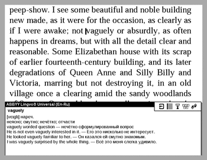
Встроенный словарь, доступный в процессе чтения, —
одна из фирменных особенностей ридеров PocketBook
Естественно, у потенциального покупателя возникает вопрос: какой набор навигационных функций можно считать достаточным? Наверное, у каждого пользователя имеется собственное мнение по этому вопросу, и привести все существующие варианты к единому знаменателю попросту невозможно. Так, отсутствие у ридера поддержки оглавления и сносок или, скажем, контекстного поиска вряд ли является фатальным недостатком — ведь текст всё равно можно будет прочитать. Другое дело, что наличие данных функций позволит сделать процесс чтения более удобным. И это, безусловно, необходимо учитывать при сравнении разных моделей.
Организация книжной полкиДаже ридеры с небольшим объемом встроенной памяти способны хранить сотни и тысячи файлов. И если найти нужную среди двух-трех десятков книг не составит труда даже в неупорядоченном общем списке, то для эффективного поиска в более многочисленной библиотеке уже не обойтись без соответствующих инструментов.
В программном обеспечении многих ридеров предусмотрен элементарный файловый браузер, позволяющий осуществлять навигацию по иерархической структуре встроенной памяти и сменной карточки. Однако браузер позволит обеспечить приемлемую эффективность поиска лишь в тех случаях, когда имена файлов содержат какую-либо информацию о произведениях, а загруженные в память ридера книги определенным образом систематизированы (например, рассортированы по папкам, каждая из которых соответствует определенному автору или серии). Если же имена файлов представляют собой порядковые номера книг в каталоге или вообще малопонятную комбинацию символов, то браузер становится практически бесполезным.
Именно поэтому во многих моделях реализована функция книжной полки, позволяющая осуществлять сортировку и выборку файлов на основе служебной информации (в частности, по названиям произведения и серии, имени автора, году издания и т.д.), содержащейся в тэгах электронных книг. Возможность записи таких тэгов предусмотрена в спецификациях многих электроннокнижных форматов — FB2, ePub, PDF и ряда других. Если в программном обеспечении ридера реализованы функции чтения и обработки содержимого этих тэгов, то у пользователя есть возможность сортировать список всех загруженных в ридер книг в алфавитном порядке по определенному признаку (имени автора, названию или жанру), а также сделать выборку по заданному критерию. В некоторых моделях также есть функция контекстного поиска заданной пользователем последовательности символов в тэгах файлов. Такой подход обеспечивает значительно большее удобство по сравнению с файловым браузером, к тому же эффективность поиска не зависит от специфики имен файлов и их расположения в иерархической структуре логического диска.
Еще одна весьма полезная функция — список последних прочитанных книг. С его помощью можно быстро открыть одно из читаемых в данный момент произведений, не пользуясь книжной полкой или файловым браузером.
С точки зрения удобства использования оптимальным вариантом является наличие в программном обеспечении ридера как книжной полки (с функцией чтения тэгов), так и файлового браузера. Последний может пригодиться для поиска файлов, формат которых не предусматривает возможности сохранения тэгов (в частности, TXT).
Просмотр изображенийФункция отображения графических файлов есть у подавляющего большинства современных моделей. Однако в силу ряда причин (и в первую очередь, конечно же, весьма ограниченной «палитры» монохромных электрофоретических дисплеев) ридер вряд ли можно признать подходящим инструментом для просмотра фотографий — пусть даже и чернобелых. Впрочем, это не означает, что данная функция не имеет практической ценности.
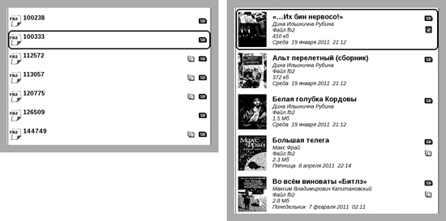
Если имена файлов не содержат информации о произведениях, файловый браузер
становится практически бесполезным (пример слева). В этом случае пригодится функция книжной полки,
позволяющая считывать данные из тэгов электронных книг
Вопервых, ридер задействует ее для отображения иллюстраций в читаемых книгах, а также сохраненных пользователем цитат. А во-вторых, у многих моделей режим просмотра графических файлов изначально предназначен не для просмотра фотографий, а для чтения комиксов. Конечно, на ридерах с 5- и 6-дюймовыми дисплеями читать комиксы, мягко говоря, не очень комфортно (если, конечно, исходные изображения не были оптимизированы для просмотра на небольшом экране), а вот на 9-дюймовых устройствах это уже вполне возможно.
ПамятьКакой объем памяти можно считать достаточным для ридера? Правило «чем больше — тем лучше», которым обычно руководствуются при выборе портативного медиаплеера, в данном случае вряд ли стоит брать на вооружение. Давайте разберемся почему.
Для хранения медиаконтента современные ридеры оснащаются встроенной флэшпамятью, объем которой составляет от 1 до 4 Гбайт. Правда, нередко часть этой памяти используется для системных нужд, вследствие чего доступный для загрузки файлов объем оказывается несколько меньше заявленного.
Но имеет ли смысл в данном случае гнаться за максимальными показателями? С одной стороны, если применять ридер исключительно для чтения, то вполне хватит и 1 Гбайт встроенной памяти. Это позволит вместить от нескольких сотен до нескольких тысяч книг. С другой стороны, если планируется задействовать функции ридера по полной (а многие современные модели способны отображать графические файлы, воспроизводить звуковые записи и т.д.), то и 4 Гбайт встроенной памяти может не хватить. Впрочем, если в ридере предусмотрена возможность установки сменных носителей (а она есть у большинства ныне выпускаемых моделей), то объем встроенной памяти и вовсе можно не принимать в расчет, особенно учитывая доступную цену и высокую емкость сменных карточек.
Ранее фактическим стандартом для ридеров был полноразмерный слот SD. Сейчас производители постепенно переходят к использованию более компактных носителей microSD. Эту тенденцию вряд ли можно объяснить стремлением к миниатюризации (в конце концов, габариты ридера определяются прежде всего размерами дисплейной панели) — скорее всего, дело в использовании унифицированных компонентов, выпускаемых для устройств различных типов.
В последнее время значительно увеличилось количество моделей, в которых реализована поддержка карточек SDHC (microSDHC). Правда, в некоторых устройствах максимальная емкость таких носителей ограничена (например, поддерживаются карточки объемом не более 8 Гбайт) — так что прежде чем покупать 16- или 32-гигабайтную карточку к своему ридеру, нелишне будет заглянуть в руководство пользователя.
КоммуникацииСтандартным средством коммуникации, используемым для подключения ридера к ПК, является проводной интерфейс USB. Такое соединение позволяет загружать электронные книги и медиафайлы других типов с настольного или портативного ПК. Кроме того, шина питания этого интерфейса заодно задействуется и для подзарядки аккумулятора.
В большинстве моделей подсоединение интерфейсного кабеля осуществляется через разъем miniUSB. Однако в последнее время постепенно увеличивается доля ридеров, оборудованных разъемом microUSB, что вполне согласуется с тенденциями развития портативных цифровых устройств.
Буквально за пару лет заметно увеличилась доля моделей, оснащенных помимо интерфейса USB различными средствами беспроводных коммуникаций: Bluetooth, Wi-Fi и модулями сотовой связи. Нужны ли подобные опции, или без них вполне можно обойтись? Чтобы ответить на этот вопрос, сначала разберемся, с какой целью эти функции были внедрены в ридерах. А точнее, зачем подобным устройствам может понадобиться доступ в Интернет?
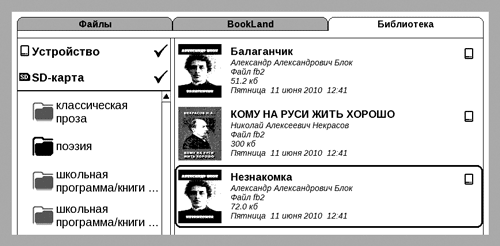
В некоторых ридерах функция книжной полки позволяет делать выборку книг
по определенному признаку (в приведенном примере — по жанру)
Хотя в некоторых моделях действительно есть встроенный интернет-браузер, использовать ридер как инструмент для вебсерфинга, мягко говоря, неудобно — как минимум в силу гораздо меньшей (в сравнении с нетбуками и планшетными ПК) производительности процессора и специфики электрофоретического экрана. Максимум, на что можно рассчитывать, — это чтение статических страничек с новостями, статьями и книгами.
На самом деле средства доступа в Интернет появились в ридерах для работы со специализированными онлайновыми сервисами, предоставляющими услуги по приобретению и загрузке медиаконтента (главным образом электронных версий книг и периодических изданий). Здесь необходимо отметить, что в США и западноевропейских странах существенную долю рынка занимают ридеры, поставляемые в комплекте с подпиской на доступ к фирменному сервису или книжному интернет-магазину (наиболее известным примером реализации такой бизнес-модели является американский бестселлер Amazon Kindle). Понятно, что наличие встроенных средств беспроводной связи является необходимым условием для эксплуатации таких устройств.
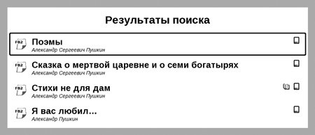
Функция контекстного поиска позволяет найти произведения
по ключевому слову, содержащемуся в тэгах, или по имени файла
Однако в нашей стране ситуация в корне иная. Попытки продвижения ридеров, ориентированных на приобретение и загрузку медиаконтента посредством фирменного онлайнового сервиса, в России предпринимались уже неоднократно, однако ни одна из них пока не увенчалась успехом. Такие факторы, как сложная экономическая ситуация и наличие огромного количества электронных книг в открытом доступе, отнюдь не способствуют развитию онлайновых сервисов, специализирующихся на продаже электронной литературы. Доминирующей моделью использования ридера в России по-прежнему является самостоятельный поиск и загрузка медиаконтента. А в таких условиях наличие средств беспроводной коммуникации вряд ли можно считать весомым преимуществом при сравнении моделей.
ЭлектропитаниеРассматривая портативные электронные устройства, нельзя обойти стороной вопрос электропитания. В отличие от большинства других гаджетов, являющихся весьма «прожорливыми» потребителями электроэнергии, ридеры могут похвастаться впечатляющей продолжительностью автономной работы даже при относительно скромной емкости аккумулятора. Достигается это благодаря использованию относительно маломощных процессоров, отсутствию подсветки экрана и особенностям электрофоретических дисплеев, потребляющих электроэнергию только в процессе обновления изображения на экране.
Учитывая специфику данного типа устройств, производители обычно указывают в спецификации ридеров не продолжительность автономной работы в часах, а количество перелистываний (обновлений экрана), которое устройство способно выполнить без подзарядки. У современных моделей с 5- и 6-дюймовыми дисплеями этот показатель обычно составляет от 8 до 14 тыс. страниц; у 9-дюймовых — порядка 6-8 тыс. Впрочем, не следует воспринимать данный параметр буквально: в реальных условиях эксплуатации ридер затрачивает энергию не только на обновление изображения на экране при перелистывании страниц, но и на выполнение различных манипуляций с меню, открытие файлов, форматирование текста и т.д. Таким образом, значения, указанные в этой графе технических характеристик, являются ориентировочными и пригодны лишь для сравнения моделей между собой.
Если говорить о реальной эксплуатации, то хорошим показателем является необходимость подзарядки не чаще одного раза в две недели при чтении в течение 2-3 ч ежедневно. Если же пользоваться устройством нерегулярно, то заряда вполне может хватить и на месяцдругой.
Фактическим стандартом для ридеров является подзарядка при подключении интерфейсного кабеля. Это позволяет получать питание от универсальных зарядных устройств с розеткой USB, а также от любого работающего ПК. Правда, учитывая емкость используемых в подобных устройствах аккумуляторов и ограничение на максимальный ток по шине питания USB (не более 1 А), расплачиваться за подобную унификацию приходится довольно большой продолжительностью цикла подзарядки — порядка 5-6 ч.
Нелишне обратить внимание на такой нюанс, как возможность работы параллельно с подзарядкой. Это позволит избежать досадной ситуации, когда аккумулятор полностью разрядился на самом интересном месте увлекательного повествования. Если ридер способен работать и одновременно заряжать аккумулятор, то разрешить такую ситуацию несложно: достаточно подсоединить интерфейсный кабель к специальному адаптеру или USB-порту ПК и можно будет продолжить чтение.
В некоторых моделях при подсоединении USB-кабеля на экране появляется меню, позволяющее выбрать дальнейшие действия: подключить в качестве внешнего накопителя для обмена данными (в случае соединения с ПК), зарядить аккумулятор либо включить ридер для использования параллельно с подзарядкой.
ОбложкаЕсли ридер предполагается хотя бы время от времени эксплуатировать в мобильных условиях, имеет смысл сразу же после покупки приобрести подходящую обложку, которая обеспечит надежную защиту экрана (а заодно — и поверхности корпуса) от механических воздействий в процессе транспортировки.
Некоторые производители предлагают одну и ту же модель в различных комплектациях. Если выбранный ридер доступен в комплекте с фирменной обложкой, имеет смысл присмотреться к этому варианту. Вопервых, комплектная обложка гарантированно подойдет к этому ридеру, а во-вторых, цена расширенной комплектации обычно несколько ниже по сравнению с затратами на приобретение такого же набора аксессуаров по отдельности.
Разумеется, есть категория пользователей, для которых важна не только функциональность, но и имиджевая составляющая. И если обложки, предлагаемые производителем ридера, не способны удовлетворить ваши эстетические запросы, стоит обратить внимание на изделия компаний, которые специализируются на выпуске аксессуаров к портативным электронным устройствам. Тем более что сейчас в продаже представлен широкий ассортимент обложек для ридеров — от недорогих виниловых до высококачественных изделий из натуральной кожи. Здесь важно обратить внимание на то, что есть обложки, предназначенные для определенных моделей ридеров (как правило, они оборудованы специфической системой крепления), а есть универсальные, которые теоретически могут применяться с разными устройствами определенного формфактора. Перед покупкой универсальной обложки необходимо убедиться в том, что ее удастся прикрепить к имеющемуся ридеру и при этом она не будет ограничивать свободу манипуляций органами управления.
В конструкции ряда компактных моделей предусмотрена жесткая крышка, которая закрывает экран в нерабочем положении и крепится на заднюю панель во время чтения. В качестве примеров можно привести ридеры PocketBook 360° и iriver Cover Story (у первого крышка крепится на защелках, а у второго — на магнитах). Это довольно удобное решение (особенно для чтения в общественном транспорте) позволяющее обойтись без отдельной обложки.
|
Клавиатура ридера: варианты реализации Для ввода номеров страниц, а также поисковых запросов необходим соответствующий инструмент. В некоторых ридерах (например, Amazon Kindle и iriver Story) для этого используется аппаратная клавиатура. В моделях, оснащенными сенсорными экранами, обычно предусмотрена виртуальная клавиатура (как у карманных и планшетных ПК).
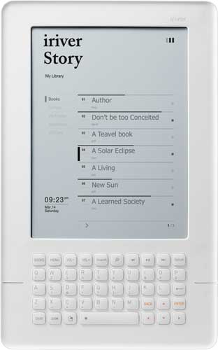 Ридер iriver Story оснащен полнофункциональной Впрочем, встречаются и другие решения. Например, в ридерах компании PocketBook, не оборудованных сенсорными экранами, функция набора букв, цифр и прочих символов реализована при помощи оригинальной экранной клавиатуры, которая управляется посредством многопозиционного указателя.
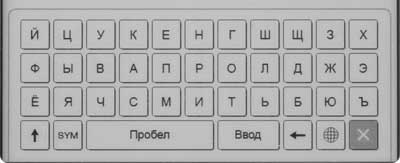 В ридерах с сенсорными экранами
для ввода текста Для минимизации количества необходимых действий и повышения скорости набора клавиши разделены на пять секций. Алгоритм набора таков: первым нажатием пользователь выбирает секцию с нужным символом, затем перемещает курсор на нужную клавишу и подтверждает выбор. Конечно, такая клавиатура менее удобна по сравнению с аппаратной или реализованной на базе сенсорного экрана, однако с ее помощью можно довольно быстро набирать отдельные слова и фразы.
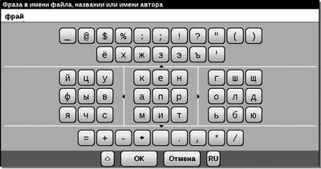 Экранная клавиатура ридеров PocketBook Отметим, что даже при наличии аппаратной клавиатуры и функции сохранения текстовых заметок использовать ридер в качестве пишущей машинки для набора объемных текстов оказывается весьма неудобно — главным образом из-за невысокой скорости обновления изображения на экране. Тем не менее для сохранения коротких записей (адреса, номера телефона или иной информации) такая функция вполне пригодна. |
В настоящей статье мы собрали информацию о наиболее важных аспектах, которые следует принимать во внимание при выборе электронного ридера. Разумеется, в рамках даже столь объемной публикации невозможно рассказать обо всех нюансах. Как минимум потому, что сегмент электронных ридеров продолжает активно развиваться: количество производителей этих устройств достигло уже нескольких десятков, а новые модели появляются в продаже практически каждый месяц.
В заключение хотелось бы повторить, что электронные ридеры являются весьма специфическими устройствами: в отличие от большинства других гаджетов, ключевое значение имеют возможности программного обеспечения, в то время как спецификация аппаратной части и внешняя привлекательность не столь важны, как, например, при выборе мобильного телефона. Кроме того, критичным фактором является адаптация программного обеспечения ридера к российской специфике.
Если в магазине есть возможность опробовать устройство в работе перед покупкой — обязательно воспользуйтесь этим (разумеется, не забыв захватить с собой карту памяти с набором электронных книг в разных форматах). Это позволит составить собственное мнение относительно функциональности и удобства использования рассматриваемой модели (и соответственно принять решение о целесо-образности ее приобретения), даже если в вашем распоряжении всего 10-15 минут. Удачных покупок и приятного чтения!